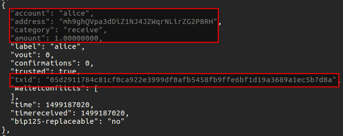

The goal of this application was to prove with an implemented proof-of-concept how Bitcoin bidirectional payment channels can be implemented using the idea proposed by Christian Decker and Roger Wattenhofer [1] of linking two unidirectional payment channels and use an invalidation tree to enable channel resets. The technical proposal and explanation can be found in the project whitepaper and in the project presentation slides
[1] C. Decker and R. Wattenhofer, “A fast and scalable payment network with bitcoin duplex micropayment channels” in Symposium on Self-Stabilizing Systems, pp. 3-18, Springer, 2015
The software can create transactions to create and operate our implementation of the Decker's bidirectional payment channels proposal with the following features:
fund, pay, reset, close)--priv-keys, --utxo-ids, --utxo-nums, --expiry-time, --funds, --expiry-time).Currently the software has the following limitations:
bitcoin-cli sendrawtransaction methodHere a guide on how to use the software manually with the current limitations. We suppose we have access to a Bitcoin Core wallet operating on the Bitcoin's testnet network, that allows us to export private keys and list the wallet transactions and also access the bitcoin-cli client. In order to test the channel faster, you can enable -regtest mode.
In order to provide a practical guide, we will create a bidirectional payment channel using our application to enable payments between Alice and Bob (two virtual users we both control)
In order to just have 2 inputs in the funding transaction, we must first fund two new Bitcoin P2PKH adresses with the funds for Alice and Bob.
Previously to this step we have created two accounts, one for Alice and one for Bob in order to be the more realistic as possible when creating this guide
This can done having a default wallet with some amount of bitcoins (maybe obtained from a faucet)
The command to move some amount of bitcoins from the default account to an account (and create that account if does not exist) isuser@bitcoin:~$ bitcoin-cli move "" alice 1.5To move 1.5 BTCs from default account to Alice's account. The same command allows to create Bob's account or increase any of both accounts.
Creating accounts is necessary in order to have several different addresses to receive and send funds to.
So we must obtain a new Alice's address and a new Bob's address. We can do it with the command:
user@bitcoin:~$ bitcoin-cli getaccountaddress alice
It will output a new address for Alice's account. Like we can see in the following screenshot
We repeat the same steps but with Bob to obtain a Bob's address to fund.
IMPORTANT: Take note of the addresses for Alice and Bob
Now we fund this address with the exact amount of bitcoins we want Alice to fund the payment channel, sending some funds Alice owns to this new address. In this example, we want Alice to fund the channel with 1 tBTC.
user@bitcoin:~$ bitcoin-cli sendfrom alice mh9ghQVpa3dDiZ1NJ4JZWqrNLirZG2P8RH 1
Replace the address in the example by the address obtained from previous command
If the transaction was succesfully created and broadcasted, its txId will appear in the command line as a result as we can see in the next figure
We do the same to get an address for Bob and fund Bob's address.
IMPORTANT: Take note of the
txIdoutput from the command for Alice and Bob
After that, we can check in an online block explorer when our transactions are confirmed by searching the obtained txId. We will see also which output number sends funds to the address we specified (starting to count from 0)
In our example, the output number is 0. We repeat this previous steps to get the output number of Bob's transaction.
IMPORTANT: Take note of the output number that funds the address, counting from zero for both Alice and Bob's
txIds
We can also check it using the
bitcoin-cli listtransactionscommand and looking at the confirmations number for the transaction. It also provides details about the transaction

Figure 4. Checking if a transaction has been confirmed usingbitcoin-cli
Summarizing, we need for both Alice and Bob:
Now we need to spend this funds payed to those addresses by performing a digital signature, so we need the corresponding private keys for each of the addresses. We can obtain the private keys using bitcoin-cli. In order to avoid copying and pasting the private key, we will store keys in files.
user@bitcoin:~$ bitcoin-cli dumpprivkey mh9ghQVpa3dDiZ1NJ4JZWqrNLirZG2P8RH > alice.key
Note that we specify Alice's address to obtain Alice's private key. We do the same to obtain Bob's private key.
Required environment
Remember to have Python 3.6 and have installed the dependencies (python-bitcoinlibandpybitcointools) before running the software. Dependencies can be installed withpip
We now have everything to start using the application and create our payment channels. We can start by calling main module src using a terminal located in the project's source code roots' folder and requesting for help with the -h argument
user@bitcoin:~$ python -m src -h
It will show us basic application usage help and all arguments that can handle
From now on, we can request an operation and the software will go asking for arguments until all necessary arguments are filled.
To create the channel structure, we need to specify the following operation and arguments
user@bitcoin:~$ python -m src \--priv-keys $(cat alice.key) $(cat bob.key) \--utxo-ids 1ea738d159141bc65e8c2409a31d4ab174c684a9382b33be689c5038cb839347 \d291aa5e80ec5f454d95b11946202bf501d54bb3c2bbd6584cafc31415b6c492 \--utxo-nums 1 1 --funds 1 1 --expiry-time 1151554 \--tree-depth 1 fund
This means, we have to specify:
--utxo-ids and specify the previous input ids to spent for Alice and Bob in the right order. Also we have to specify --utxo-nums to specify the output numbers for both Alice and Bob.< 500000000 or as timestamp if greater. See BIP-65 for more information.This is the master command we need to use as a base to create all the channel basic structure. We'll change it and extend it to perform resets, payments and eventually closure transactions.
The output, if all parameters are correct is something like the following figure:
Where all transactions to fund the channel and have the basic invalidation tree appear in hexadecimal format. You can add --verbose to the application's arguments to show a human-readable version of them:
You can see how in the previous figure the funding transaction refers to the previous inputs to the passed txIds and output nums. The same we created when preparing the channel.
The output, as it can also be seen has less value than 2 BTC, the sum of the inputs amounts, as 0.002 BTC fees have been automatically applied. You can change the fees to apply in each generated transaction with the --fees parameter.
IMPORTANT:
Make sure to do not change any of the parameters explained until now when paying or performing other operations, as the channel the operations may not operate over the same channel generated.
To begin operating the channel, we can just broadcast the funding transaction by copying the hexadecimal representation of the funding transaction and sending it using the bitcoin-cli client:
As you can see in the figure, as a result, the txId of the funding transaction will be returned if no errors happen.
In order to operate the channel once we have the main structure and broadcasted the funding transaction, we have to change slightly the previous generation or funding command:
user@bitcoin:~$ python -m src \--priv-keys $(cat alice.key) $(cat bob.key) \--utxo-ids 1ea738d159141bc65e8c2409a31d4ab174c684a9382b33be689c5038cb839347 \d291aa5e80ec5f454d95b11946202bf501d54bb3c2bbd6584cafc31415b6c492 \--utxo-nums 1 1 --funds 1 1 --expiry-time 1151554 \--tree-depth 1
We must replace fund with another operation, but leave all the other arguments equal in order to operate the funded channel and not a different one. We will call this command the master command
In order to perform operations, we have to add to the master command an operation and its arguments
The operation for creating payment transactions is pay. And the arguments are --to destination amount. For example, to pay 0.5 tBTC to Bob:
user@bitcoin:~$ $MASTER_COMMAND pay --to bob 0.5
This will output all structure transactions and the payment transaction at the end. Remember to always pay incremental amounts. If need to reset the channel to perform more payments, use the reset operation
If the channel has been reset and you need to create a payment transaction, you need to specify how many resets have been performed using the
--resetargument and the balances of the last reset with--balances. By default, we suppose no resets have been performed. See next section for more information.
The operation for creating a new reset is reset. And the arguments are --reset counter specifying how many resets have been performed in the past and --balances alice bob. For example, to create the first reset and set a balance of 0.5 tBTC for Alice and 1.5 tBTC for Bob:
user@bitcoin:~$ $MASTER_COMMAND reset --reset 0 --balances 0.5 1.5
You will have to use this arguments within the master command after a reset has been performed in order to create valid payment transactions as seen before.
To create the second reset, we would have to specify --reset 1 and the balances of the reset.
We can create closure transactions simulating a graceful closure where both parties agree on the channel final balance with the operation close. We specify the final balances with the same --balances argument we used in the reset operation.
For example, to create a closure transaction with final balances of 1.5 tBTC for Alice and 0.5 tBTC for Bob:
user@bitcoin:~$ $MASTER_COMMAND close --balances 0.5 1.5
At the end of the output, the closure transaction will appear.